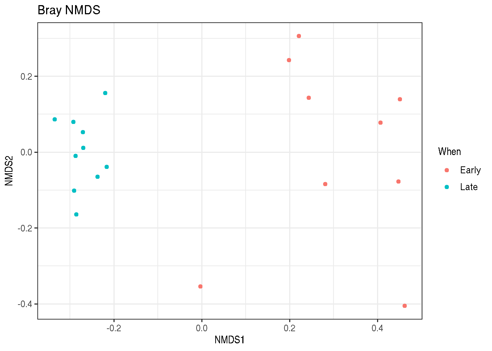
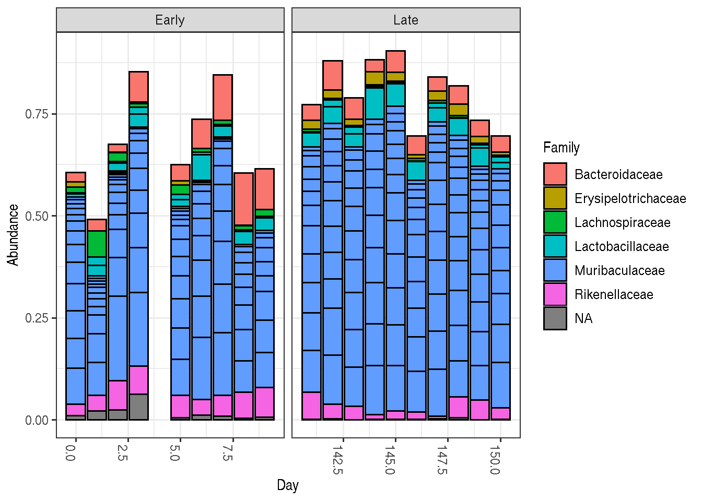

DADA2 Pipeline Tutorial (1.16)
Here we walk through version 1.16 of the DADA2 pipeline on a small multi-sample dataset. Our starting point is a set of Illumina-sequenced paired-end fastq files that have been split (or “demultiplexed”) by sample and from which the barcodes/adapters have already been removed. The end product is an amplicon sequence variant (ASV) table, a higher-resolution analogue of the traditional OTU table, which records the number of times each exact amplicon sequence variant was observed in each sample. We also assign taxonomy to the output sequences, and demonstrate how the data can be imported into the popular phyloseq R package for the analysis of microbiome data.
Starting point
This workflow assumes that your sequencing data meets certain criteria:
- Samples have been demultiplexed, i.e. split into individual per-sample fastq files.
- Non-biological nucleotides have been removed, e.g. primers, adapters, linkers, etc.
- If paired-end sequencing data, the forward and reverse fastq files contain reads in matched order.
If these criteria are not true for your data (are you sure there aren’t any primers hanging around?) you need to remedy those issues before beginning this workflow. See the FAQ for recommendations for some common issues.
Getting ready
First we load the dada2 package. If you don’t already have it, see the dada2 installation instructions.
library(dada2); packageVersion("dada2")## [1] '1.25.2'Older versions of this workflow associated with previous release versions of the dada2 R package are also available: 1.6, 1.8, 1.12, .
The data we will work with are the same as those used in the mothur MiSeq SOP. To follow along, download the example data and unzip. These fastq files were generated by 2x250 Illumina Miseq amplicon sequencing of the V4 region of the 16S rRNA gene from gut samples collected longitudinally from a mouse post-weaning. For now just consider them paired-end fastq files to be processed. Define the following path variable so that it points to the extracted directory on your machine:
path <- "~/MiSeq_SOP" # CHANGE ME to the directory containing the fastq files after unzipping.
list.files(path)## [1] "F3D0_S188_L001_R1_001.fastq" "F3D0_S188_L001_R2_001.fastq"
## [3] "F3D1_S189_L001_R1_001.fastq" "F3D1_S189_L001_R2_001.fastq"
## [5] "F3D141_S207_L001_R1_001.fastq" "F3D141_S207_L001_R2_001.fastq"
## [7] "F3D142_S208_L001_R1_001.fastq" "F3D142_S208_L001_R2_001.fastq"
## [9] "F3D143_S209_L001_R1_001.fastq" "F3D143_S209_L001_R2_001.fastq"
## [11] "F3D144_S210_L001_R1_001.fastq" "F3D144_S210_L001_R2_001.fastq"
## [13] "F3D145_S211_L001_R1_001.fastq" "F3D145_S211_L001_R2_001.fastq"
## [15] "F3D146_S212_L001_R1_001.fastq" "F3D146_S212_L001_R2_001.fastq"
## [17] "F3D147_S213_L001_R1_001.fastq" "F3D147_S213_L001_R2_001.fastq"
## [19] "F3D148_S214_L001_R1_001.fastq" "F3D148_S214_L001_R2_001.fastq"
## [21] "F3D149_S215_L001_R1_001.fastq" "F3D149_S215_L001_R2_001.fastq"
## [23] "F3D150_S216_L001_R1_001.fastq" "F3D150_S216_L001_R2_001.fastq"
## [25] "F3D2_S190_L001_R1_001.fastq" "F3D2_S190_L001_R2_001.fastq"
## [27] "F3D3_S191_L001_R1_001.fastq" "F3D3_S191_L001_R2_001.fastq"
## [29] "F3D5_S193_L001_R1_001.fastq" "F3D5_S193_L001_R2_001.fastq"
## [31] "F3D6_S194_L001_R1_001.fastq" "F3D6_S194_L001_R2_001.fastq"
## [33] "F3D7_S195_L001_R1_001.fastq" "F3D7_S195_L001_R2_001.fastq"
## [35] "F3D8_S196_L001_R1_001.fastq" "F3D8_S196_L001_R2_001.fastq"
## [37] "F3D9_S197_L001_R1_001.fastq" "F3D9_S197_L001_R2_001.fastq"
## [39] "filtered" "HMP_MOCK.v35.fasta"
## [41] "Mock_S280_L001_R1_001.fastq" "Mock_S280_L001_R2_001.fastq"
## [43] "mouse.dpw.metadata" "mouse.time.design"
## [45] "stability.batch" "stability.files"If the package successfully loaded and your listed files match those here, you are ready to go through the DADA2 pipeline.
Now we read in the names of the fastq files, and perform some string manipulation to get matched lists of the forward and reverse fastq files.
# Forward and reverse fastq filenames have format: SAMPLENAME_R1_001.fastq and SAMPLENAME_R2_001.fastq
fnFs <- sort(list.files(path, pattern="_R1_001.fastq", full.names = TRUE))
fnRs <- sort(list.files(path, pattern="_R2_001.fastq", full.names = TRUE))
# Extract sample names, assuming filenames have format: SAMPLENAME_XXX.fastq
sample.names <- sapply(strsplit(basename(fnFs), "_"), `[`, 1)
Inspect read quality profiles
We start by visualizing the quality profiles of the forward reads:
plotQualityProfile(fnFs[1:2])
In gray-scale is a heat map of the frequency of each quality score at each base position. The mean quality score at each position is shown by the green line, and the quartiles of the quality score distribution by the orange lines. The red line shows the scaled proportion of reads that extend to at least that position (this is more useful for other sequencing technologies, as Illumina reads are typically all the same length, hence the flat red line).
The forward reads are good quality. We generally advise trimming the last few nucleotides to avoid less well-controlled errors that can arise there. These quality profiles do not suggest that any additional trimming is needed. We will truncate the forward reads at position 240 (trimming the last 10 nucleotides).
Now we visualize the quality profile of the reverse reads:
plotQualityProfile(fnRs[1:2])
The reverse reads are of significantly worse quality, especially at the end, which is common in Illumina sequencing. This isn’t too worrisome, as DADA2 incorporates quality information into its error model which makes the algorithm robust to lower quality sequence, but trimming as the average qualities crash will improve the algorithm’s sensitivity to rare sequence variants. Based on these profiles, we will truncate the reverse reads at position 160 where the quality distribution crashes.
truncLen must be large enough to maintain 20 + biological.length.variation nucleotides of overlap between them.
Filter and trim
Assign the filenames for the filtered fastq.gz files.
# Place filtered files in filtered/ subdirectory
filtFs <- file.path(path, "filtered", paste0(sample.names, "_F_filt.fastq.gz"))
filtRs <- file.path(path, "filtered", paste0(sample.names, "_R_filt.fastq.gz"))
names(filtFs) <- sample.names
names(filtRs) <- sample.namesWe’ll use standard filtering parameters: maxN=0 (DADA2 requires no Ns), truncQ=2, rm.phix=TRUE and maxEE=2. The maxEE parameter sets the maximum number of “expected errors” allowed in a read, which is a better filter than simply averaging quality scores.
out <- filterAndTrim(fnFs, filtFs, fnRs, filtRs, truncLen=c(240,160),
maxN=0, maxEE=c(2,2), truncQ=2, rm.phix=TRUE,
compress=TRUE, multithread=TRUE) # On Windows set multithread=FALSE
head(out)## reads.in reads.out
## F3D0_S188_L001_R1_001.fastq 7793 7113
## F3D1_S189_L001_R1_001.fastq 5869 5299
## F3D141_S207_L001_R1_001.fastq 5958 5463
## F3D142_S208_L001_R1_001.fastq 3183 2914
## F3D143_S209_L001_R1_001.fastq 3178 2941
## F3D144_S210_L001_R1_001.fastq 4827 4312maxEE. If too few reads are passing the filter, consider relaxing maxEE, perhaps especially on the reverse reads (eg. maxEE=c(2,5)), and reducing the truncLen to remove low quality tails. Remember though, when choosing truncLen for paired-end reads you must maintain overlap after truncation in order to merge them later.
truncLen. See the DADA2 ITS workflow for more information
Alternatives: Zymo Research has recently developed a tool called Figaro that can help you choose DADA2 truncation length parameters: https://github.com/Zymo-Research/figaro#figaro
Learn the Error Rates
The DADA2 algorithm makes use of a parametric error model (err) and every amplicon dataset has a different set of error rates. The learnErrors method learns this error model from the data, by alternating estimation of the error rates and inference of sample composition until they converge on a jointly consistent solution. As in many machine-learning problems, the algorithm must begin with an initial guess, for which the maximum possible error rates in this data are used (the error rates if only the most abundant sequence is correct and all the rest are errors).
The following runs in about 3 minutes on a 2013 Macbook Pro:
errF <- learnErrors(filtFs, multithread=TRUE)## 33514080 total bases in 139642 reads from 20 samples will be used for learning the error rates.errR <- learnErrors(filtRs, multithread=TRUE)## 22342720 total bases in 139642 reads from 20 samples will be used for learning the error rates.It is always worthwhile, as a sanity check if nothing else, to visualize the estimated error rates:
plotErrors(errF, nominalQ=TRUE)
The error rates for each possible transition (A→C, A→G, …) are shown. Points are the observed error rates for each consensus quality score. The black line shows the estimated error rates after convergence of the machine-learning algorithm. The red line shows the error rates expected under the nominal definition of the Q-score. Here the estimated error rates (black line) are a good fit to the observed rates (points), and the error rates drop with increased quality as expected. Everything looks reasonable and we proceed with confidence.
Sample Inference
We are now ready to apply the core sample inference algorithm to the filtered and trimmed sequence data.
dadaFs <- dada(filtFs, err=errF, multithread=TRUE)## Sample 1 - 7113 reads in 1979 unique sequences.
## Sample 2 - 5299 reads in 1639 unique sequences.
## Sample 3 - 5463 reads in 1477 unique sequences.
## Sample 4 - 2914 reads in 904 unique sequences.
## Sample 5 - 2941 reads in 939 unique sequences.
## Sample 6 - 4312 reads in 1267 unique sequences.
## Sample 7 - 6741 reads in 1756 unique sequences.
## Sample 8 - 4560 reads in 1438 unique sequences.
## Sample 9 - 15637 reads in 3590 unique sequences.
## Sample 10 - 11413 reads in 2762 unique sequences.
## Sample 11 - 12017 reads in 3021 unique sequences.
## Sample 12 - 5032 reads in 1566 unique sequences.
## Sample 13 - 18075 reads in 3707 unique sequences.
## Sample 14 - 6250 reads in 1479 unique sequences.
## Sample 15 - 4052 reads in 1195 unique sequences.
## Sample 16 - 7369 reads in 1832 unique sequences.
## Sample 17 - 4765 reads in 1183 unique sequences.
## Sample 18 - 4871 reads in 1382 unique sequences.
## Sample 19 - 6504 reads in 1709 unique sequences.
## Sample 20 - 4314 reads in 897 unique sequences.dadaRs <- dada(filtRs, err=errR, multithread=TRUE)## Sample 1 - 7113 reads in 1660 unique sequences.
## Sample 2 - 5299 reads in 1349 unique sequences.
## Sample 3 - 5463 reads in 1335 unique sequences.
## Sample 4 - 2914 reads in 853 unique sequences.
## Sample 5 - 2941 reads in 880 unique sequences.
## Sample 6 - 4312 reads in 1286 unique sequences.
## Sample 7 - 6741 reads in 1803 unique sequences.
## Sample 8 - 4560 reads in 1265 unique sequences.
## Sample 9 - 15637 reads in 3414 unique sequences.
## Sample 10 - 11413 reads in 2522 unique sequences.
## Sample 11 - 12017 reads in 2771 unique sequences.
## Sample 12 - 5032 reads in 1415 unique sequences.
## Sample 13 - 18075 reads in 3290 unique sequences.
## Sample 14 - 6250 reads in 1390 unique sequences.
## Sample 15 - 4052 reads in 1134 unique sequences.
## Sample 16 - 7369 reads in 1635 unique sequences.
## Sample 17 - 4765 reads in 1084 unique sequences.
## Sample 18 - 4871 reads in 1161 unique sequences.
## Sample 19 - 6504 reads in 1502 unique sequences.
## Sample 20 - 4314 reads in 732 unique sequences.Inspecting the returned dada-class object:
dadaFs[[1]]## dada-class: object describing DADA2 denoising results
## 128 sequence variants were inferred from 1979 input unique sequences.
## Key parameters: OMEGA_A = 1e-40, OMEGA_C = 1e-40, BAND_SIZE = 16The DADA2 algorithm inferred 128 true sequence variants from the 1979 unique sequences in the first sample. There is much more to the dada-class return object than this (see help("dada-class") for some info), including multiple diagnostics about the quality of each denoised sequence variant, but that is beyond the scope of an introductory tutorial.
?setDadaOpt for other adjustable algorithm parameters.
dada function processes each sample independently. However, pooling information across samples can increase sensitivity to sequence variants that may be present at very low frequencies in multiple samples. The dada2 package offers two types of pooling. dada(..., pool=TRUE) performs standard pooled processing, in which all samples are pooled together for sample inference. dada(..., pool="pseudo") performs pseudo-pooling, in which samples are processed independently after sharing information between samples, approximating pooled sample inference in linear time.
Merge paired reads
We now merge the forward and reverse reads together to obtain the full denoised sequences. Merging is performed by aligning the denoised forward reads with the reverse-complement of the corresponding denoised reverse reads, and then constructing the merged “contig” sequences. By default, merged sequences are only output if the forward and reverse reads overlap by at least 12 bases, and are identical to each other in the overlap region (but these conditions can be changed via function arguments).
mergers <- mergePairs(dadaFs, filtFs, dadaRs, filtRs, verbose=TRUE)
# Inspect the merger data.frame from the first sample
head(mergers[[1]])## sequence
## 1 TACGGAGGATGCGAGCGTTATCCGGATTTATTGGGTTTAAAGGGTGCGCAGGCGGAAGATCAAGTCAGCGGTAAAATTGAGAGGCTCAACCTCTTCGAGCCGTTGAAACTGGTTTTCTTGAGTGAGCGAGAAGTATGCGGAATGCGTGGTGTAGCGGTGAAATGCATAGATATCACGCAGAACTCCGATTGCGAAGGCAGCATACCGGCGCTCAACTGACGCTCATGCACGAAAGTGTGGGTATCGAACAGG
## 2 TACGGAGGATGCGAGCGTTATCCGGATTTATTGGGTTTAAAGGGTGCGTAGGCGGCCTGCCAAGTCAGCGGTAAAATTGCGGGGCTCAACCCCGTACAGCCGTTGAAACTGCCGGGCTCGAGTGGGCGAGAAGTATGCGGAATGCGTGGTGTAGCGGTGAAATGCATAGATATCACGCAGAACCCCGATTGCGAAGGCAGCATACCGGCGCCCTACTGACGCTGAGGCACGAAAGTGCGGGGATCAAACAGG
## 3 TACGGAGGATGCGAGCGTTATCCGGATTTATTGGGTTTAAAGGGTGCGTAGGCGGGCTGTTAAGTCAGCGGTCAAATGTCGGGGCTCAACCCCGGCCTGCCGTTGAAACTGGCGGCCTCGAGTGGGCGAGAAGTATGCGGAATGCGTGGTGTAGCGGTGAAATGCATAGATATCACGCAGAACTCCGATTGCGAAGGCAGCATACCGGCGCCCGACTGACGCTGAGGCACGAAAGCGTGGGTATCGAACAGG
## 4 TACGGAGGATGCGAGCGTTATCCGGATTTATTGGGTTTAAAGGGTGCGTAGGCGGGCTTTTAAGTCAGCGGTAAAAATTCGGGGCTCAACCCCGTCCGGCCGTTGAAACTGGGGGCCTTGAGTGGGCGAGAAGAAGGCGGAATGCGTGGTGTAGCGGTGAAATGCATAGATATCACGCAGAACCCCGATTGCGAAGGCAGCCTTCCGGCGCCCTACTGACGCTGAGGCACGAAAGTGCGGGGATCGAACAGG
## 5 TACGGAGGATGCGAGCGTTATCCGGATTTATTGGGTTTAAAGGGTGCGCAGGCGGACTCTCAAGTCAGCGGTCAAATCGCGGGGCTCAACCCCGTTCCGCCGTTGAAACTGGGAGCCTTGAGTGCGCGAGAAGTAGGCGGAATGCGTGGTGTAGCGGTGAAATGCATAGATATCACGCAGAACTCCGATTGCGAAGGCAGCCTACCGGCGCGCAACTGACGCTCATGCACGAAAGCGTGGGTATCGAACAGG
## 6 TACGGAGGATGCGAGCGTTATCCGGATTTATTGGGTTTAAAGGGTGCGTAGGCGGGATGCCAAGTCAGCGGTAAAAAAGCGGTGCTCAACGCCGTCGAGCCGTTGAAACTGGCGTTCTTGAGTGGGCGAGAAGTATGCGGAATGCGTGGTGTAGCGGTGAAATGCATAGATATCACGCAGAACTCCGATTGCGAAGGCAGCATACCGGCGCCCTACTGACGCTGAGGCACGAAAGCGTGGGTATCGAACAGG
## abundance forward reverse nmatch nmismatch nindel prefer accept
## 1 579 1 1 148 0 0 1 TRUE
## 2 470 2 2 148 0 0 2 TRUE
## 3 449 3 4 148 0 0 1 TRUE
## 4 430 4 3 148 0 0 2 TRUE
## 5 345 5 6 148 0 0 1 TRUE
## 6 282 6 5 148 0 0 2 TRUEThe mergers object is a list of data.frames from each sample. Each data.frame contains the merged $sequence, its $abundance, and the indices of the $forward and $reverse sequence variants that were merged. Paired reads that did not exactly overlap were removed by mergePairs, further reducing spurious output.
mergePairs(..., justConcatenate=TRUE).
Construct sequence table
We can now construct an amplicon sequence variant table (ASV) table, a higher-resolution version of the OTU table produced by traditional methods.
seqtab <- makeSequenceTable(mergers)
dim(seqtab)## [1] 20 293# Inspect distribution of sequence lengths
table(nchar(getSequences(seqtab)))##
## 251 252 253 254 255
## 1 88 196 6 2The sequence table is a matrix with rows corresponding to (and named by) the samples, and columns corresponding to (and named by) the sequence variants. This table contains 293 ASVs, and the lengths of our merged sequences all fall within the expected range for this V4 amplicon.
seqtab2 <- seqtab[,nchar(colnames(seqtab)) %in% 250:256]). This is analogous to “cutting a band” in-silico to get amplicons of the targeted length.
Remove chimeras
The core dada method corrects substitution and indel errors, but chimeras remain. Fortunately, the accuracy of sequence variants after denoising makes identifying chimeric ASVs simpler than when dealing with fuzzy OTUs. Chimeric sequences are identified if they can be exactly reconstructed by combining a left-segment and a right-segment from two more abundant “parent” sequences.
seqtab.nochim <- removeBimeraDenovo(seqtab, method="consensus", multithread=TRUE, verbose=TRUE)
dim(seqtab.nochim)## [1] 20 232sum(seqtab.nochim)/sum(seqtab)## [1] 0.9640374The frequency of chimeric sequences varies substantially from dataset to dataset, and depends on on factors including experimental procedures and sample complexity. Here chimeras make up about 21% of the merged sequence variants, but when we account for the abundances of those variants we see they account for only about 4% of the merged sequence reads.
Track reads through the pipeline
As a final check of our progress, we’ll look at the number of reads that made it through each step in the pipeline:
getN <- function(x) sum(getUniques(x))
track <- cbind(out, sapply(dadaFs, getN), sapply(dadaRs, getN), sapply(mergers, getN), rowSums(seqtab.nochim))
# If processing a single sample, remove the sapply calls: e.g. replace sapply(dadaFs, getN) with getN(dadaFs)
colnames(track) <- c("input", "filtered", "denoisedF", "denoisedR", "merged", "nonchim")
rownames(track) <- sample.names
head(track)## input filtered denoisedF denoisedR merged nonchim
## F3D0 7793 7113 6976 6979 6540 6528
## F3D1 5869 5299 5227 5239 5028 5017
## F3D141 5958 5463 5331 5357 4986 4863
## F3D142 3183 2914 2799 2830 2595 2521
## F3D143 3178 2941 2822 2868 2553 2519
## F3D144 4827 4312 4151 4228 3646 3507Looks good! We kept the majority of our raw reads, and there is no over-large drop associated with any single step.
truncLen parameter used in the filtering step and make sure that the truncated reads span your amplicon. If a majority of reads were removed as chimeric, you may need to revisit the removal of primers, as the ambiguous nucleotides in unremoved primers interfere with chimera identification.
Assign taxonomy
It is common at this point, especially in 16S/18S/ITS amplicon sequencing, to assign taxonomy to the sequence variants. The DADA2 package provides a native implementation of the naive Bayesian classifier method for this purpose. The assignTaxonomy function takes as input a set of sequences to be classified and a training set of reference sequences with known taxonomy, and outputs taxonomic assignments with at least minBoot bootstrap confidence.
We maintain formatted training fastas for the RDP training set, GreenGenes clustered at 97% identity, and the Silva reference database, and additional trainings fastas suitable for protists and certain specific environments have been contributed. For fungal taxonomy, the General Fasta release files from the UNITE ITS database can be used as is. To follow along, download the silva_nr99_v138.1_train_set.fa.gz file, and place it in the directory with the fastq files.
taxa <- assignTaxonomy(seqtab.nochim, "~/tax/silva_nr99_v138.1_train_set.fa.gz", multithread=TRUE)Extensions: The dada2 package also implements a method to make species level assignments based on exact matching between ASVs and sequenced reference strains. Recent analysis suggests that exact matching (or 100% identity) is the only appropriate way to assign species to 16S gene fragments. Currently, species-assignment training fastas are available for the Silva and RDP 16S databases. To follow the optional species addition step, download the silva_species_assignment_v138.1.fa.gz file, and place it in the directory with the fastq files.
taxa <- addSpecies(taxa, "~/tax/silva_species_assignment_v138.1.fa.gz")Let’s inspect the taxonomic assignments:
taxa.print <- taxa # Removing sequence rownames for display only
rownames(taxa.print) <- NULL
head(taxa.print)## Kingdom Phylum Class Order Family
## [1,] "Bacteria" "Bacteroidota" "Bacteroidia" "Bacteroidales" "Muribaculaceae"
## [2,] "Bacteria" "Bacteroidota" "Bacteroidia" "Bacteroidales" "Muribaculaceae"
## [3,] "Bacteria" "Bacteroidota" "Bacteroidia" "Bacteroidales" "Muribaculaceae"
## [4,] "Bacteria" "Bacteroidota" "Bacteroidia" "Bacteroidales" "Muribaculaceae"
## [5,] "Bacteria" "Bacteroidota" "Bacteroidia" "Bacteroidales" "Bacteroidaceae"
## [6,] "Bacteria" "Bacteroidota" "Bacteroidia" "Bacteroidales" "Muribaculaceae"
## Genus Species
## [1,] NA NA
## [2,] NA NA
## [3,] NA NA
## [4,] NA NA
## [5,] "Bacteroides" NA
## [6,] NA NAUnsurprisingly, the Bacteroidetes are well represented among the most abundant taxa in these fecal samples. Few species assignments were made, both because it is often not possible to make unambiguous species assignments from subsegments of the 16S gene, and because there is surprisingly little coverage of the indigenous mouse gut microbiota in reference databases.
Eukaryota NA NA NA NA NA, your reads may be in the opposite orientation as the reference database. Tell dada2 to try the reverse-complement orientation with assignTaxonomy(..., tryRC=TRUE) and see if this fixes the assignments. If using DECIPHER for taxonomy, try IdTaxa (..., strand="both").
Alternatives: The recently developed IdTaxa taxonomic classification method is also available via the DECIPHER Bioconductor package. The paper introducing the IDTAXA algorithm reports classification performance that is better than the long-time standard set by the naive Bayesian classifier. Here we include a code block that allows you to use IdTaxa as a drop-in replacement for assignTaxonomy (and it’s faster as well!). Trained classifiers are available from http://DECIPHER.codes/Downloads.html. Download the SILVA SSU r132 (modified) file to follow along.
library(DECIPHER); packageVersion("DECIPHER")## [1] '2.26.0'dna <- DNAStringSet(getSequences(seqtab.nochim)) # Create a DNAStringSet from the ASVs
load("~/tax/IDTaxa/SILVA_SSU_r138_2019.RData") # CHANGE TO THE PATH OF YOUR TRAINING SET
ids <- IdTaxa(dna, trainingSet, strand="top", processors=NULL, verbose=FALSE) # use all processors
ranks <- c("domain", "phylum", "class", "order", "family", "genus", "species") # ranks of interest
# Convert the output object of class "Taxa" to a matrix analogous to the output from assignTaxonomy
taxid <- t(sapply(ids, function(x) {
m <- match(ranks, x$rank)
taxa <- x$taxon[m]
taxa[startsWith(taxa, "unclassified_")] <- NA
taxa
}))
colnames(taxid) <- ranks; rownames(taxid) <- getSequences(seqtab.nochim)taxid matrix from IdTaxa is a drop-in replacement for the taxa matrix from assignTaxonomy, simply set taxa <- taxid to carry on using the IdTaxa assignments. Read more about IdTaxa and other useful tools at the DECIPHER R package website.
Evaluate accuracy
One of the samples included here was a “mock community”, in which a mixture of 20 known strains was sequenced (this mock community is supposed to be 21 strains, but P. acnes is absent from the raw data). Reference sequences corresponding to these strains were provided in the downloaded zip archive. We return to that sample and compare the sequence variants inferred by DADA2 to the expected composition of the community.
Evaluating DADA2’s accuracy on the mock community:
unqs.mock <- seqtab.nochim["Mock",]
unqs.mock <- sort(unqs.mock[unqs.mock>0], decreasing=TRUE) # Drop ASVs absent in the Mock
cat("DADA2 inferred", length(unqs.mock), "sample sequences present in the Mock community.\n")## DADA2 inferred 20 sample sequences present in the Mock community.mock.ref <- getSequences(file.path(path, "HMP_MOCK.v35.fasta"))
match.ref <- sum(sapply(names(unqs.mock), function(x) any(grepl(x, mock.ref))))
cat("Of those,", sum(match.ref), "were exact matches to the expected reference sequences.\n")## Of those, 20 were exact matches to the expected reference sequences.This mock community contained 20 bacterial strains. DADA2 identified 20 ASVs all of which exactly match the reference genomes of the expected community members. The residual error rate after the DADA2 pipeline for this sample is 0%.
Here ends the DADA2 portion of the tutorial.
Bonus: Handoff to phyloseq
The phyloseq R package is a powerful framework for further analysis of microbiome data. We now demonstrate how to straightforwardly import the tables produced by the DADA2 pipeline into phyloseq. We’ll also add the small amount of metadata we have – the samples are named by the gender (G), mouse subject number (X) and the day post-weaning (Y) it was sampled (eg. GXDY).
Import into phyloseq:
library(phyloseq); packageVersion("phyloseq")## [1] '1.42.0'library(Biostrings); packageVersion("Biostrings")## [1] '2.66.0'library(ggplot2); packageVersion("ggplot2")## [1] '3.4.0'theme_set(theme_bw())We can construct a simple sample data.frame from the information encoded in the filenames. Usually this step would instead involve reading the sample data in from a file.
samples.out <- rownames(seqtab.nochim)
subject <- sapply(strsplit(samples.out, "D"), `[`, 1)
gender <- substr(subject,1,1)
subject <- substr(subject,2,999)
day <- as.integer(sapply(strsplit(samples.out, "D"), `[`, 2))
samdf <- data.frame(Subject=subject, Gender=gender, Day=day)
samdf$When <- "Early"
samdf$When[samdf$Day>100] <- "Late"
rownames(samdf) <- samples.outWe now construct a phyloseq object directly from the dada2 outputs.
ps <- phyloseq(otu_table(seqtab.nochim, taxa_are_rows=FALSE),
sample_data(samdf),
tax_table(taxa))
ps <- prune_samples(sample_names(ps) != "Mock", ps) # Remove mock sampleIt is more convenient to use short names for our ASVs (e.g. ASV21) rather than the full DNA sequence when working with some of the tables and visualizations from phyloseq, but we want to keep the full DNA sequences for other purposes like merging with other datasets or indexing into reference databases like the Earth Microbiome Project. For that reason we’ll store the DNA sequences of our ASVs in the refseq slot of the phyloseq object, and then rename our taxa to a short string. That way, the short new taxa names will appear in tables and plots, and we can still recover the DNA sequences corresponding to each ASV as needed with refseq(ps).
dna <- Biostrings::DNAStringSet(taxa_names(ps))
names(dna) <- taxa_names(ps)
ps <- merge_phyloseq(ps, dna)
taxa_names(ps) <- paste0("ASV", seq(ntaxa(ps)))
ps## phyloseq-class experiment-level object
## otu_table() OTU Table: [ 232 taxa and 19 samples ]
## sample_data() Sample Data: [ 19 samples by 4 sample variables ]
## tax_table() Taxonomy Table: [ 232 taxa by 7 taxonomic ranks ]
## refseq() DNAStringSet: [ 232 reference sequences ]We are now ready to use phyloseq!
Visualize alpha-diversity:
plot_richness(ps, x="Day", measures=c("Shannon", "Simpson"), color="When")
No obvious systematic difference in alpha-diversity between early and late samples.
Ordinate:
# Transform data to proportions as appropriate for Bray-Curtis distances
ps.prop <- transform_sample_counts(ps, function(otu) otu/sum(otu))
ord.nmds.bray <- ordinate(ps.prop, method="NMDS", distance="bray")## Run 0 stress 0.08043117
## Run 1 stress 0.08076339
## ... Procrustes: rmse 0.01051237 max resid 0.03235558
## Run 2 stress 0.09477219
## Run 3 stress 0.1228545
## Run 4 stress 0.08043116
## ... New best solution
## ... Procrustes: rmse 1.699413e-06 max resid 4.492512e-06
## ... Similar to previous best
## Run 5 stress 0.1010631
## Run 6 stress 0.08076339
## ... Procrustes: rmse 0.01054992 max resid 0.0324765
## Run 7 stress 0.08076339
## ... Procrustes: rmse 0.01050059 max resid 0.03231325
## Run 8 stress 0.1212044
## Run 9 stress 0.08043116
## ... Procrustes: rmse 8.180652e-07 max resid 1.741666e-06
## ... Similar to previous best
## Run 10 stress 0.08076338
## ... Procrustes: rmse 0.01053605 max resid 0.03243126
## Run 11 stress 0.08616061
## Run 12 stress 0.0807634
## ... Procrustes: rmse 0.0105699 max resid 0.03254154
## Run 13 stress 0.1212044
## Run 14 stress 0.08616061
## Run 15 stress 0.1256441
## Run 16 stress 0.1336964
## Run 17 stress 0.0947719
## Run 18 stress 0.08043117
## ... Procrustes: rmse 3.134295e-06 max resid 9.546557e-06
## ... Similar to previous best
## Run 19 stress 0.09477214
## Run 20 stress 0.08076337
## ... Procrustes: rmse 0.0105016 max resid 0.03231875
## *** Best solution repeated 3 timesplot_ordination(ps.prop, ord.nmds.bray, color="When", title="Bray NMDS")
Ordination picks out a clear separation between the early and late samples.
Bar plot:
top20 <- names(sort(taxa_sums(ps), decreasing=TRUE))[1:20]
ps.top20 <- transform_sample_counts(ps, function(OTU) OTU/sum(OTU))
ps.top20 <- prune_taxa(top20, ps.top20)
plot_bar(ps.top20, x="Day", fill="Family") + facet_wrap(~When, scales="free_x")
Nothing glaringly obvious jumps out from the taxonomic distribution of the top 20 sequences to explain the early-late differentiation.
Using external packages
A variety of other packages are available, extending phyloseq. Dr. Sudarshan Shetty maintains a comprehensive list of R tools for microbiome data science. One widely used package is the microbiome R/Bioconductor package, which has a more extensive tutorial of its own. The package provides tools for microbiome data manipulation, transformations, and visualization.
Let us first load the package, and transform the original count data into relative abundances. Other common transformations are also available, including e.g. clr, hellinger, and log10p.
library(microbiome)
# Transform into compositional data (relative abundances)
ps.rel <- microbiome::transform(ps, "compositional")Let us then calculate prevalence of the taxa (i.e. relative population frequencies), using 0.1% compositional abundance as a detection threshold:
# Sorted from the most prevalent to the least prevalent
head(prevalence(ps.rel, detection = 0.1/100, sort = TRUE), 20)## ASV18 ASV15 ASV14 ASV13 ASV11 ASV10 ASV9 ASV8
## 1.0000000 1.0000000 1.0000000 1.0000000 1.0000000 1.0000000 1.0000000 1.0000000
## ASV7 ASV5 ASV4 ASV3 ASV2 ASV1 ASV54 ASV40
## 1.0000000 1.0000000 1.0000000 1.0000000 1.0000000 1.0000000 0.9473684 0.9473684
## ASV28 ASV25 ASV21 ASV55
## 0.9473684 0.9473684 0.9473684 0.8947368We can also subset the phyloseq object to the prevalent taxa (detected in 50% of the population at higher than 0.1% relative abundance):
# Subset to prevalent (core) taxa
ps.core <- core(ps.rel, detection = 0.1/100, prevalence = 50/100)
# Compare the objects before and after subsetting to the core:
print(ps.rel)## phyloseq-class experiment-level object
## otu_table() OTU Table: [ 232 taxa and 19 samples ]
## sample_data() Sample Data: [ 19 samples by 4 sample variables ]
## tax_table() Taxonomy Table: [ 232 taxa by 7 taxonomic ranks ]
## refseq() DNAStringSet: [ 232 reference sequences ]print(ps.core)## phyloseq-class experiment-level object
## otu_table() OTU Table: [ 57 taxa and 19 samples ]
## sample_data() Sample Data: [ 19 samples by 4 sample variables ]
## tax_table() Taxonomy Table: [ 57 taxa by 7 taxonomic ranks ]
## refseq() DNAStringSet: [ 57 reference sequences ]We can also aggregate data to Genus level, and collapse rare taxa into an “Other” category.
ps.core2 <- aggregate_rare(ps.rel, "Genus", detection = 0.1/100, prevalence = 50/100)
print(ps.core2)## phyloseq-class experiment-level object
## otu_table() OTU Table: [ 25 taxa and 19 samples ]
## sample_data() Sample Data: [ 19 samples by 4 sample variables ]
## tax_table() Taxonomy Table: [ 25 taxa by 2 taxonomic ranks ]Finally, the microbiome package provides complementary visualization methods. One example is a heatmap that can be used to visualize relations between the size of the core microbiota at various detection and prevalence thresholds (Shetty et al. FEMS Microbiology Reviews fuw045, 2017).
# Core with absolute counts and horizontal view:
# and minimum population prevalence (given as percentage)
# In the end we add some ggplot formatting for the figure
library(RColorBrewer)
prevalences <- seq(.05, 1, .05)
detections <- seq(from = 0, to = round(max(abundances(ps.rel))/10, 2), by = 0.002)
p <- plot_core(ps.rel, plot.type = "heatmap",
prevalences = prevalences,
detections = detections,
colours = rev(brewer.pal(5, "Spectral")),
min.prevalence = .2, horizontal = TRUE) +
theme(axis.text.x= element_text(size=8, face="italic", hjust=1),
axis.text.y= element_text(size=8),
axis.title = element_text(size=10),
legend.text = element_text(size=8),
legend.title = element_text(size=10))
print(p)These were some minimal examples of what can be done with phyloseq, as our purpose here was just to show how the results of DADA2 can be easily imported into phyloseq and interrogated further. For examples of the many analyses possible with phyloseq, see the phyloseq web site!
Maintained by Benjamin Callahan (benjamin DOT j DOT callahan AT gmail DOT com)
Documentation License: CC-BY 4.0